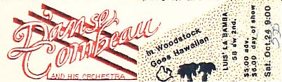
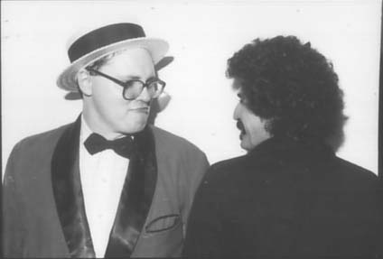

Now Playing: "Sound of Silence"



|
Willamette Week, Dec. 21, 1982 D'Anse Combeau and his Orchestra It's as if grown
men and women were putting on a first-grade vaudeville show or perhaps
it's Portland's most popular and studied fraternity. Whatever D'Anse
Combeau is, he and his Fractured Frenchmen are good for laughs - at
least the first time around. They certainly have a good time with their
offbeat antics, which throw together unlikely stereotypes: a French,
effeminate Mick Jagger, a French, effeminate cowboy, a French, effeminate,
Western Elvis Presley, and so on. This time they've struck a rich genre
with "The D'Anse Combeau Christmas Magic Show." We're likely to see
them perform the Hallelujah Chorus and Blowing in the Wind a la Viking,
and just imagine what the fiendish ol' boys will do with Quarterflash's
Harden My Heart, with all the party props and everything. The show opens
at a new club in Portland, the Starry Night, which promises to have
one of the largest stages in the area, great acoustics and not a single
bad seat in the house (Northwest 6th Avenue and Burnside Street, 7:30
and 10:30 pm, Tuesday and Wednesday, Dec. 28 and 29, 227-0069). Tickets
are available at Meier & Frank downtown, G.I. Joe's, Everybody's Records,
and Park Avenue Records).
|